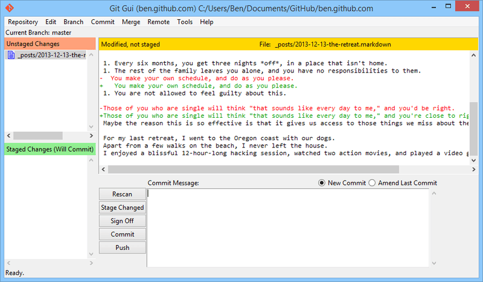

Git

Git on hajus versioonihaldussüsteem, mille autoriks oli Linus Torvalds aastal 2005. See süsteem võimaldab jälgida muudatusi arvutifailides ning seda kasutatakse peamiselt programmeerijate koostööks tarkvaraarenduses. Git keskendub kiirusele, andmete terviklikkusele ning toetab hajusaid, mitte-lineaarseid töövooge. Olulisteks omadusteks on:
- Mitte-lineaarne Arendus: Git võimaldab kiiret harude loomist ja ühendamist, muutes arendusajaloo visualiseerimise ja navigeerimise lihtsaks.
- Hajus Arendus: Igal arendajal on oma kohalik täielik ajalugu ning muudatused kopeeritakse ühest repositooriumist teise, hõlbustades koostööd.
- Ühilduvus: Git toetab erinevaid protokolle repositooriumide avaldamiseks ning on ühilduv olemasolevate süsteemidega nagu CVS ja Subversion.
- Efektiivsus: Git on tuntud oma kiiruse ja skaalatavuse poolest, töötades suurte projektidega tõhusalt võrreldes alternatiividega nagu Mercurial ja Bazaar.
- Krüptograafiline Autentimine: Git tagab andmete terviklikkuse, salvestades ajaloo viisil, mis takistab manipuleerimist.
- Tööriistapõhine Disain: Git on kavandatud programmide ja skriptide komplektina, mis võimaldab paindlikkust ja lihtsat integreerimist.
- Lisatavad Ühendamisstrateegiad: Git pakub mitmeid algoritme muudatuste ühendamiseks, võimaldades vajadusel käsitsi sekkumist.
- Prahi kogumine: Git kogub ja eemaldab automaatselt ebavajalikud objektid, et säilitada repositooriumi tõhusust.
- Perioodiline Objektipakendamine: Git salvestab objekte individuaalselt, kuid pakib neid perioodiliselt ruumitõhususe tagamiseks.
- Andmestruktuurid: Giti objektisalvestus hõlmab plokke (failisisu), puid (kaustu), committe (ühendatud ajalugu), siltide (metaandmed) ja pakkefaile (kokkusurutud kogumikke).
Lisaks failiversioonide salvestamisele kasutab Git silte, mida nimetatakse refs-ideks, et märkida olulisi punkte ajaloos, nagu harud ja sildid. Git'i laialdane kasutus ja populaarsus programmeerijate hulgas teevad sellest olulise osa kaasaegsetest tarkvaraarenduse töövoogudest.